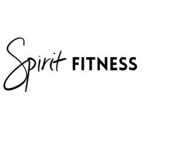

Trade Mark Journal No.2025/010 7 March 2025
UK00004165206 25 February 2025 (25,28)

- Class 25
- Clothing; Leisure wear; Leisure clothing; Sports wear; Leisure suits; Casual wear; Exercise wear; Sports jerseys and breeches for sports; Sports garments; Sports jackets; Sports jerseys; Sports bras; Sports vests; Sports socks; Sports headgear [other than helmets]; Sports singlets; Moisture-wicking sports shirts; Sport shirts; Moisture-wicking sports pants; Moisture-wicking sports bras; Sports caps; Sports shirts with short sleeves; Athletic uniforms; Tennis wear; Ski wear; Formal wear; Surf wear; Swim wear for children; Swim wear for gentlemen and ladies; Clothing for wear in wrestling games; Clothing for wear in judo practices; Clothes for sports; Casual clothing; Clothes for sport; Clothing for cycling; Sports garments; Clothing for sports; Sports clothing; Jackets being sports clothing; Jogging outfits; Jogging bottoms [clothing]; Gussets for bathing suits [parts of clothing]; Casual trousers; Casual shirts; Sports pants; Sport shirts; Jogging sets [clothing]; Bathing suits for men; Clothing for cyclists; Shorts [clothing]; Clothing for skiing; Padded shirts for athletic use; Sports shirts; Athletic clothing; Swimming suits; Bathing suits; Gymwear; Gym suits; Clothing for gymnastics; Women's clothing; Clothing for men, women and children; Men's clothing; Gloves; Gloves [clothing]; Fingerless gloves; Hats; Fashion hats; Scarfs; Neck scarfs [mufflers]; Wristbands; Wristbands [clothing]; Cleats for attachment to sports shoes; Socks; Sports socks; Anti-perspirant socks; Headbands; Headbands against sweating.
- Class 28
- Weight lifting gloves; Hand wraps for sports use; Wrist straps for weightlifting; Wrist guards for athletic use; Knee guards [sports articles]; Knee guards for athletic use; Knee pads for athletic use; Knee guards for sports use; Knee pads for sports use; Lifting grips for weight lifting; Elbow guards [sports articles]; Protective supports for shoulders and elbows [sports articles]; Gym chalk for improving hand grip in sports activities.
Katherine Maltby
Representative: GCS Europe Ltd